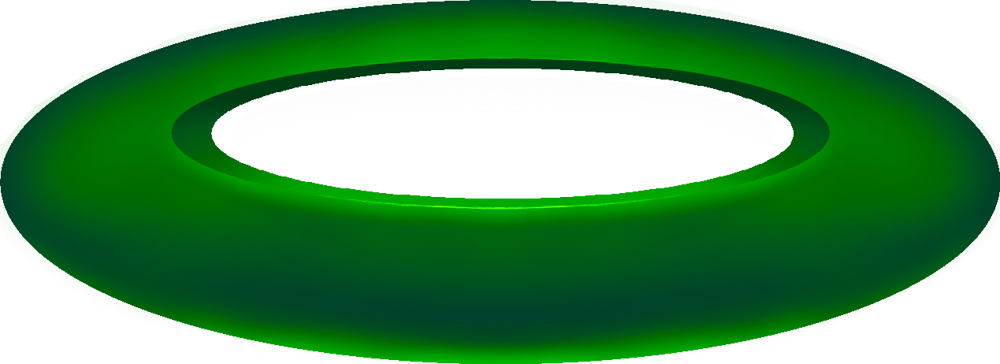

I am Oscar Casley, a passionate, dedicated, DIY creative and have been making music for over 20 years. Starting with recording my own music as a teenager in NZ, I moved back to Naarm, my birthplace, to pursue my dreams. I formed a network of amazing like-minded creatives, played in many bands, and recorded and produced over 15 works for myself and others. I focused mainly on the creative side, writing, recording and playing many gigs.
Before COVID I bought my first synthesizer and began exploring a different side of music. The rabbit hole deepened, and soon I was building my own synths and sequencers, experimenting with new ways of making and thinking about sound. I have always loved teaching myself new skills and figuring things out through experimentation, whether that is music, electronics, visual art or game development.